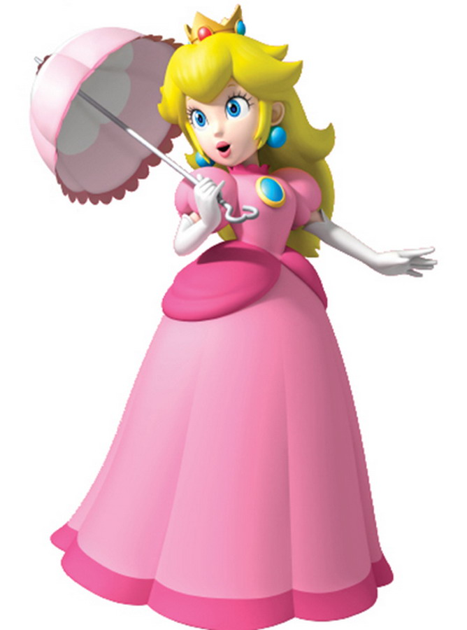

2.2. Phép biện chứng duy vật & Nguyên lý về sự phát triển
Khám phá tư duy biện chứng duy vật, phân biệt Biện chứng khách quan vs Chủ quan và Nguyên lý về sự phát
triển trong nhận thức & thực tiễn.
Tư Duy Biện Chứng
Mối liên hệ & Sự vận động không ngừng
SLIDE PRESENTATION01 / 07
01
1. Tình huống mở đầu & 2 Video thực tế
Video 1: Tình huống mở đầu
Mở đầu
Tình huống thực tế tạo điểm nhấn mở đầu, kích thích sự chú ý và kéo sự tương tác trực tiếp của cả lớp.
Video 2: Lý giải tình huống
Phân tích
Lý giải tình huống thực tế: Vì sao chúng ta phải xem xét sự vật trong mối liên hệ - vận động - biến đổi.
Gợi mở tương tác lớp học: Từ tình huống thực tế ➔ Thế giới xung quanh chúng ta đang thay đổi và vận động như thế nào?
2. Khái niệm Biện chứng & Tư duy Vận động
Khái niệm Biện chứng là gì?
Xem xét sự vật, hiện tượng trong mối liên hệ phổ biến, tác động và chuyển hóa lẫn nhau.
Nhìn nhận thế giới trong trạng thái vận động, biến đổi và phát triển không ngừng.
Là phương pháp tư duy đối lập trực tiếp với phương pháp siêu hình (xem xét sự vật cô lập, tĩnh tại).
Yêu cầu quan trọng trong nhận thức
Góc nhìn biện chứng toàn diện
Mọi sự vật, hiện tượng phải luôn được đánh giá và quan sát trong mối liên hệ – sự vận động – sự biến đổi thực tế chứ không được nhìn phiến diện hay cố định.
Câu hỏi chuyển giao:
“Những thay đổi đó tồn tại ngoài thực tế hay chỉ trong cách mình suy nghĩ?”
3. Biện chứng khách quan & Ví dụ cái cây
Lời dẫn:“Sự vận động bên ngoài và sự phản ánh trong tư duy có mối liên hệ mật thiết nhưng bản chất khác nhau. Hãy cùng làm rõ!”
Khái niệm Biện chứng khách quan
Là sự vận động, phát triển và những mối liên hệ vốn có của chính thế giới vật chất (tự nhiên & xã hội). Nó tồn tại độc lập, không phụ thuộc vào việc con người có nhận thức được nó hay không.
Phân tích Ví dụ Thực tế: Hình ảnh Cái Cây
Diễn biến vật chất khách quan ngoài thực tế
Đất đang ướt, phòng thiếu ánh sáng, chậu thoát nước kém ➔ dẫn đến rễ bắt đầu úng ➔ cái cây héo đi. Tất cả những quá trình vật lý, sinh học và sự tác động qua lại đó là biện chứng khách quan. Dù chúng ta có đứng nhìn hay không, cái cây vẫn tự vận động theo quy luật của riêng nó.
4. Biện chứng chủ quan & Diễn tiến Tư duy
Khái niệm Biện chứng chủ quan
Thế giới vật chất vận động thì tư duy con người cũng không đứng yên. Biện chứng chủ quan là sự phản ánh biện chứng khách quan vào trong đầu óc con người, giúp tư duy vận động để "bắt nhịp" và mô phỏng lại thực tế.
Diễn tiến Quá trình Tư duy của Con Người
1. Tư duy vội vàng: Thấy lá héo ➔ Kết luận đơn giản "thiếu nước"
2. Tư duy biện chứng: Thu thập thông tin rễ, ánh sáng, nhiệt độ ➔ Kết nối dữ kiện ➔ Đánh giá toàn diện "cây héo vì úng rễ"
→ Sự thay đổi, chuyển biến và liên kết thông tin trong bộ não chính là Biện chứng chủ quan.
5. Tóm tắt & So sánh 2 loại hình (Chốt vấn đề)
Để chốt lại sự khác biệt, chỉ cần nhớ:
Biện chứng khách quan
Là hiện thực cái cây đang héo đi vì vô số yếu tố môi trường tác động lẫn nhau ngoài đời thực. (Thuộc về thế giới vật chất).
Biện chứng chủ quan
Là sự biến đổi trong logic suy nghĩ của chúng ta: từ chỗ nghĩ đơn giản là 'thiếu nước', chuyển sang tư duy đa chiều để hiểu đúng bản chất sự việc. (Thuộc về thế giới tinh thần, nhận thức).
Mối quan hệ phản ánh
Sự phản ánh trong tư duy (chủ quan) luôn cố gắng bám sát sự vận động của thế giới (khách quan) để giúp con người nhận thức đúng đắn.
Lời chuyển ý sang phần tiếp theo:
“Như vậy, thế giới bên ngoài luôn thay đổi phức tạp, đòi hỏi tư duy của chúng ta cũng phải linh hoạt để phản ánh chính xác sự phức tạp đó.”
“Vậy con người dùng cách nhìn này như một phương pháp để giải quyết vấn đề thế nào? Xin mời tiếp tục sang phần tiếp theo!”
6. Phép biện chứng là gì?
Phân biệt "biện chứng" và "PHÉP biện chứng"
"Biện chứng"
Cách sự vật tồn tại và cách ta nhìn nó – là hiện tượng khách quan trong thế giới tự nhiên và xã hội.
"PHÉP biện chứng"
Là cả một học thuyết, một hệ thống lý luận khoa học được xây dựng để nghiên cứu và ứng dụng biện chứng.
Định nghĩa (Ăng-ghen)
Phép biện chứng là khoa học về…
…những quy luật phổ biến của sự vận động và phát triển của tự nhiên, xã hội và tư duy.
Nhấn mạnh: Sự khác nhau giữa "biện chứng" và "PHÉP biện chứng" — cái sau là hệ thống lý luận, cao hơn.
7. Phép biện chứng duy vật – Bản hoàn chỉnh nhất
Lịch sử hình thành 3 hình thức biện chứng
① Biện chứng tự phát (Cổ đại)
→ Đúng nhưng chưa chứng minh được. Chỉ dựa trên quan sát trực quan, chưa có cơ sở khoa học vững chắc.
Chưa hệ thốngTrực quan
② Biện chứng duy tâm (Hegel)
→ Có biện chứng nhưng cho rằng "ý niệm" có trước. Đặt tư duy lên trên thực tế – sai lầm căn bản.
Ý niệm có trướcDuy tâm
③ Biện chứng DUY VẬT (Mác – Ăng-ghen)
→ Giữ lối biện chứng của Hegel, đặt trên nền duy vật (vật chất có trước). Đây là bản hoàn chỉnh nhất.
Vật chất có trướcKhoa họcHoàn chỉnh nhất
"Phép biện chứng là học thuyết về sự thống nhất của các mặt đối lập." — V.I. Lênin (đây là hạt nhân của phép biện chứng).
8. Đặc điểm & Vai trò của Phép biện chứng duy vật
Đặc điểm nổi bật
Thống nhất hữu cơ giữa hai thứ:
Thế giới quan duy vật – vật chất có trước.
Phương pháp luận biện chứng – nhìn trong liên hệ, vận động.
Vai trò
Công cụ tư duy khoa học
Cho ta phương pháp tư duy khoa học → nhìn đúng thì làm đúng. Tránh được các sai lầm do nhìn phiến diện, tĩnh tại.
"Linh hồn sống" của chủ nghĩa Mác
Được xem là "linh hồn sống" của chủ nghĩa Mác – nền tảng phương pháp luận cho toàn bộ hệ thống lý luận Mác-Lênin.
9. Quay lại cái cây – Hai cách tư duy đối lập
Từ ví dụ đến phương pháp: So sánh 2 cách giải quyết
Cách nhìn SAI (Siêu hình)
Thấy héo → kết luận ngay "thiếu nước" → tưới thêm → rễ càng úng → cây chết.
Phiến diệnKhông liên hệKết quả: Cây chết
Cách nhìn ĐÚNG (Biện chứng)
① Xuất phát từ thực tế khách quan: đất ẩm, thiếu sáng, chậu thoát nước kém, rễ úng.
② Đặt trong liên hệ & quá trình: nước – đất – rễ – ánh sáng – nhiệt độ – vị trí.
③ Tìm đúng mâu thuẫn chính: úng nước + thiếu sáng → ngưng tưới, cải thiện thoát nước, đưa ra chỗ sáng.
Toàn diệnLiên hệ đa chiềuKết quả: Cây sống
Kết luận cao trào: Cùng một cái cây — đổi cách tư duy là đổi luôn cách giải quyết. Đây chính là giá trị thực tiễn của Phép biện chứng duy vật.
MINI GAME PHÂN LOẠI
Lô Tô Biện Chứng Duy Vật
Rút thẻ tình huống ngẫu nhiên và chọn xem tình huống thuộc loại hình Biện Chứng Khách Quan hay Biện Chứng
Chủ Quan!
Điểm số0
Chuỗi đúng0 🔥
Đã hoàn thành0 / 6
VÉ SỐ #1TÌNH HUỐNG THỰC TẾ
Nhấn nút "Rút Thẻ Lô Tô" bên dưới để bắt đầu thử thách phân loại tình huống biện chứng!
ĐÚNG RỒI!
Giải thích chi tiết:
GAME TƯƠNG TÁC
Mario giải cứu công chúa
Vượt qua 5 căn phòng câu hỏi về Triết học & Chủ nghĩa duy vật lịch sử để giải cứu Công chúa Peach!
Bảng xếp hạng
Hạng
Tên
Thời gian
Phòng1 / 5
Câu hỏi1 / 2
Thời gian0:00
Mạng♥ ♥ ♥ ♥ ♥
Phòng 1 · Câu 10:00♥ ♥ ♥ ♥ ♥

TRIẾT HỌC MÁC - LÊNINPHÉP BIỆN CHỨNG & GIAI CẤP
Phòng 1: Khái niệm Triết học
Đang tải câu hỏi...
Bảng xếp hạng kết quả
Hạng
Tên
Thời gian
AI TRANSPARENCY
Ứng Dụng AI
Các công cụ AI hỗ trợ xây dựng nội dung web & trò chơi.
Công Cụ AI Đã Sử Dụng (AI Usage)
Gemini AI / ChatGPT
Hỗ trợ tổng hợp cấu trúc bài thuyết trình từ tài liệu Doc, biên soạn kịch bản câu hỏi Lô Tô & game
Mario.
Antigravity ImageGen
Tạo hình ảnh chân dung V. I. Lênin cổ điển chất lượng cao cho Slide 04 học thuyết.
Vanilla JS & CSS Glassmorphic Engine
Xây dựng giao diện web tĩnh responsive, tích hợp Mario Game Canvas & Lô Tô Quiz Game.